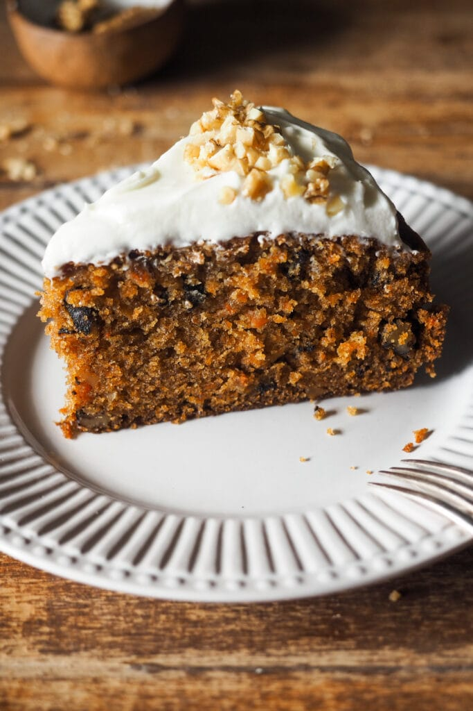

Carrot Cake sin TACC
Esta carrot cake sin TACC es ideal para personas con celiaquía o que buscan una opción más saludable. Tiene ingredientes naturales y es fácil de hacer en casa.
Ver receta completa